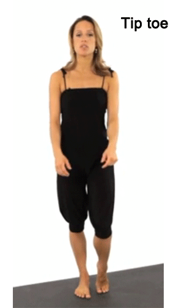
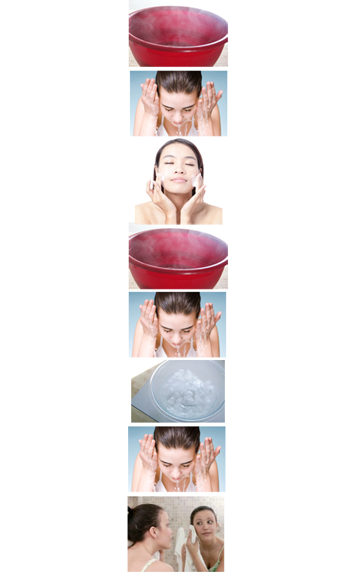

Expertise
How to cut a pineapple

How to do a tree pose in yoga

How to wash face properly
1. Turn on warm water to gently wash your face.
2. Rub facile cleanser with your fingers to make it foam.
3. Using your ring finger, use circular motion to gently rub the entire face. You will be starting from the forehead and make your way down to the temples, cheeks, nose, and chin. Your left ring finger will go counterclockwise and your right ring finger will go clockwise.
4. Splash your face with warm water to get the cleanser off. Do not rub.
5. Switch to cold water and splash your face a couple of times with it.
6. Finally, dry your face by gently patting with a towel.
